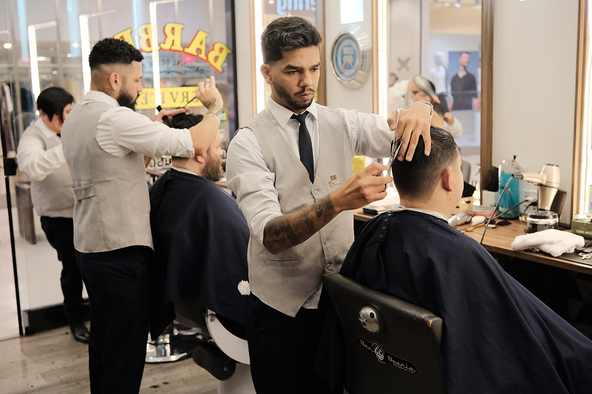

Mais do que um corte de cabelo ou uma barba feita, a nossa barbearia nasceu para ser um ponto de encontro.
Criamos um espaço onde a tradição da barbearia clássica se conecta com o estilo e a praticidade do homem moderno.
Aqui, o tempo corre num ritmo diferente. Cada atendimento é individual e sem pressa,
combinando técnicas precisas de corte, navalha afiada e toalha quente com o conforto
de um ambiente pensado para você relaxar, tomar uma cerveja gelada e trocar uma boa ideia.
Nossa equipe é formada por profissionais apaixonados pelo que fazem, sempre atentos às novidades,
mas sem perder o respeito à essência do ofício. Queremos que você saia não apenas com o visual
renovado, mas com a sensação de ter aproveitado o seu momento.
Atendimento Personalizado: Análise do seu estilo para um resultado sob medida.
Técnica e Tradição: Do degradê moderno ao barbear clássico na navalha.
Ambiente Único: Cerveja gelada, boa música e o espaço ideal para desacelerar.